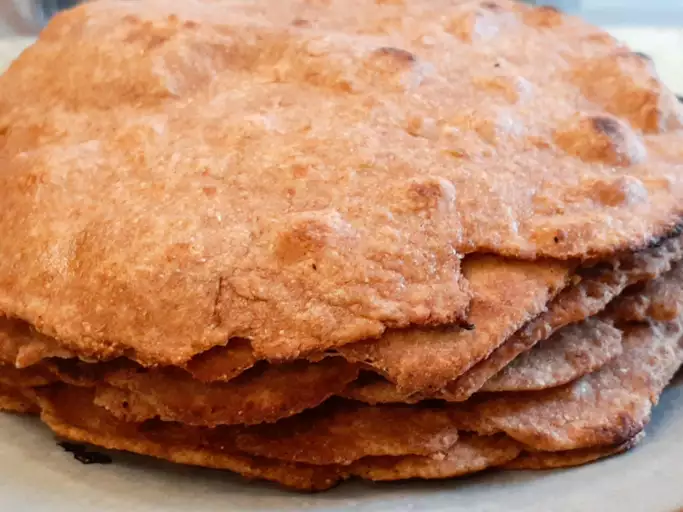

Quick Whole Wheat Chapati
Return to home page

So, what is it?
Alright, brace yourself for the culinary genius of the Quick Whole Wheat Chapati.
Picture this: a lightning-fast, no-nonsense, whole wheat flatbread that's the
answer to your carb-loving prayers. It's like a high-speed train to Flavor Town,
perfectly golden, chewy, and ready to scoop up whatever tasty dish you throw its
way. No fuss, no frills – just a delicious shortcut to unleashing your inner bread.
Ingredients
2 ½ cups whole wheat flour
¾ teaspoon salt
1 cup water
Steps
- Throw flour and a dash of salt into a bowl. Get that party started by stirring in water until it all comes together in a soft, doughy symphony.
- Now, picture this – you're on a lightly floured work surface, dough in hand. Give it a few kneads, real therapeutic-like. Then, break that dough into 8 pieces and roll each one into a ball. Take out the rolling pin, and make those balls into thin, perfect rounds. It's like dough ballet, man.
- Heat up a griddle, like medium-high vibes. Lay each dough round on there, and watch the magic happen. When bubbles and blisters start showing up (takes about 2 minutes), flip 'em. Cook until you've got that perfect, light brown vibe on the other side. It's like making edible art on a griddle canvas. Enjoy!
Return to home page